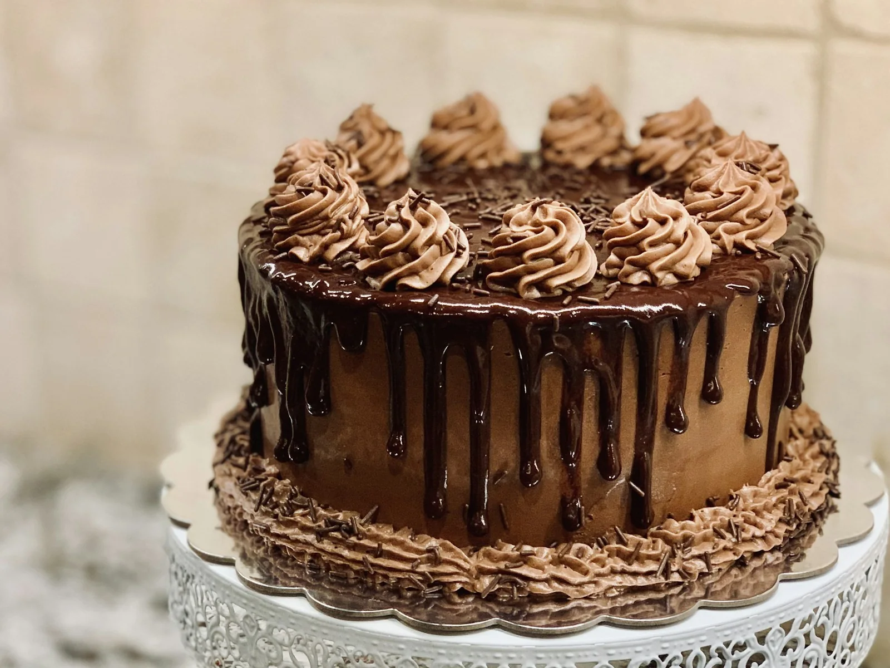
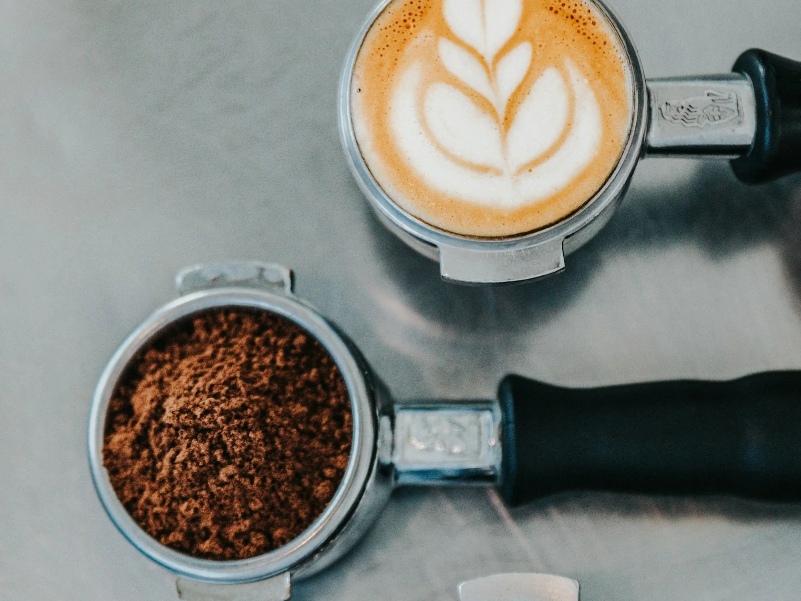

LAMINATED
Butter croissant to seasonal danish.
Eight pastry options give the catalog enough depth to feel like a real bakery case.
See pastry ↗ARTISAN BAKERY · CHICAGO
Long-fermented loaves, laminated pastry, celebration cakes, breakfast, coffee and catering — rebuilt into one coherent bakery experience.
START HERE
No generic “packages.” Everything is organized around what a bakery actually sells.

BREAD PROGRAM
Instead of presenting bread as one generic menu item, the new site treats the bread program as a core product line with individual loaves, pickup guidance and wholesale context.
MORNING CASE
The menu now gives pastry its own category, pricing and pickup path.
LAMINATED
Eight pastry options give the catalog enough depth to feel like a real bakery case.
See pastry ↗
COOKIES & BARS
Cookies and bars now connect directly to pre-orders and catering.
BAKE RHYTHM
Country loaves and early baguettes.
Croissants, danish and morning buns.
Baguettes, focaccia and savory items.
Sandwiches, quiche and soup.
Espresso bar and batch coffee while available.
CAKES
Eight cake formats plus a custom inquiry path.
CELEBRATIONS
Standard cakes can be pre-ordered; tiered or highly customized designs use a separate request flow so the website stays clear.
Browse cakesCustom cake request ↗
CATERING & WHOLESALE
Two separate commercial pathways instead of vague group bookings.
CATERING
Pastry boxes, cookie trays, coffee totes and custom quantities for gatherings.
Catering catalog ↗WHOLESALE
Sample partner program with recurring ordering, product mix and delivery-window information.
Wholesale program ↗CAFÉ
Espresso, milk drinks and catering coffee now have their own page.

ESPRESSO BAR
Six core coffee options keep the menu focused and easy to scan.
Coffee menuFAQ
Yes. This prototype includes a demo pre-order flow for bakery items and boxes.
Standard cakes are presented as 48–72 hour preorder items; custom tiered work needs more lead time. Verify final policy.
The site explains that small-batch items can sell out and encourages pre-ordering when timing matters.
See the Allergen Information page. Cross-contact is possible in a working bakery.
Yes. The new site has a separate wholesale inquiry path for café and hospitality partners.
PRE-ORDER
Save catalog items, then send a demo preorder request with pickup day and notes.